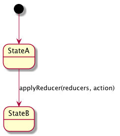
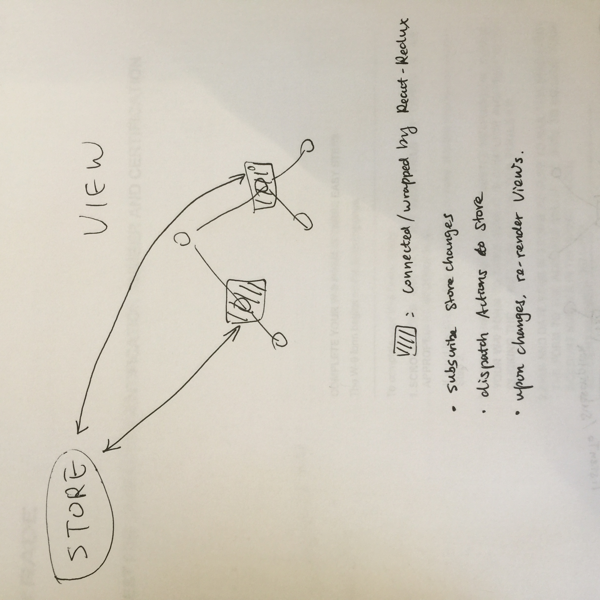

react
1 React
2 Redux
stateplain javascript objectstorehas state, dispatch, subscribereducertake previousstateandaction, return an newstatecombineReducers- how to pass
storedown to children? props v.s. context Providerconnect
data State = ??
data Action a = Action { type :: String
, value :: a
}
data Reducer = Reducer { State -> Action a -> State }
combineReducers :: [Reducers] -> Reducer
combineReducers = undefined

3 React-Redux

[ ]looks like react-redux didn't encourage to use State but just Props at Component level. How does it force to re-render the Component when Props changed.
3.1 Provider
class Provider extends Component {
// what's this function?
getChildContext() {
return { [storeKey]: this[storeKey], [subscriptionKey]: null }
}
constructor(props, context) {
super(props, context)
this[storeKey] = props.store;
}
render() {
// what is `Children`
return Children.only(this.props.children)
}
}
if (process.env.NODE_ENV !== 'production') {
Provider.prototype.componentWillReceiveProps = function (nextProps) {
if (this[storeKey] !== nextProps.store) {
warnAboutReceivingStore()
}
}
}
// Assume this is type definition to prop and context
Provider.propTypes = {
store: storeShape.isRequired,
children: PropTypes.element.isRequired,
}
Provider.childContextTypes = {
[storeKey]: storeShape.isRequired,
[subscriptionKey]: subscriptionShape,
}
3.2 Connect
Now it's time to hook up those presentational components to Redux by creating some containers. Technically, a container component is just a React component that uses store.subscribe() to read a part of the Redux state tree and supply props to a presentational component it renders. You could write a container component by hand, but we suggest instead generating container components with the React Redux library's connect() function, which provides many useful optimizations to prevent unnecessary re-renders. (One result of this is that you shouldn't have to worry about the React performance suggestion of implementing shouldComponentUpdate yourself.)
[ ]what are possible unnecessary re-renders?[ ]isn'tstoreavailable at all children component?[ ]isn'tpropsspecific to Component? hence need to readstoreand map toprops?[ ]isn'tpropssort of readonly but shall updatestatewhen store changed?[ ]does it make to have globalpropsderived fromstore? like the update model function from Elm Architecture.
3.3 References
4 Redux Middleware
- Redux Observable
- Redux saga
- Redux thunk